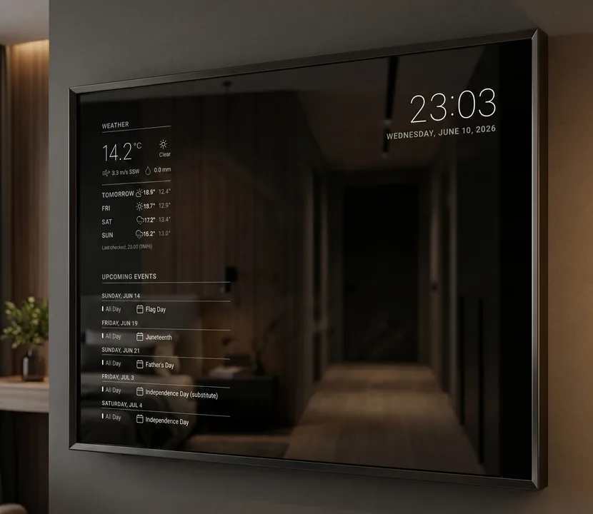

Easy setup from your phone.
Scan the QR code on the mirror, pick your Wi-Fi, and choose what it shows. Changing it later works the same way, from the sofa.
Works with Apple Home and Google Home.
Through Matter, the mirror's screen shows up as a light in your home app. Turn it on by voice, from the app, or in your automations. A motion sensor or a schedule can do it too. The rest of the time it's just a mirror.
- Apple Home
- Google Home
- Home Assistant
- Alexa and SmartThings should work too, but haven't been tried yet. Tell us how it goes.
Safe in your home. Built to last.
A mirror hangs on the wall for years. MirrorDash is made to look after itself, and after your home.
- Your passwords stay yours. Every module runs walled off: it can't read your passwords or reach the other devices on your network.
- Updates you can trust. If an update doesn't work, the mirror keeps the version that did.
- It doesn't wear out. The system can't be changed by use, so it starts the same way every morning.
- Nothing hidden. All of MirrorDash is open source, so you, or someone you trust, can check exactly what it does in your home.
All you need
Four things, and an afternoon.
Modules, one tap away
Install them in the admin page under Modules → Add modules.
Missing something? Build your own.
With our developer kit, one command creates a new module with example data and a mirror on your computer that shows every change as you save. Publish it on GitHub, and it shows up under Add modules on every mirror.
$ uvx mirrordash-sdk quickstart mirrordash-my-widget
Coming from MagicMirror²?
Same idea: a glance at the mirror on your way out. What's different is everything around it. You set it up and change it from your phone instead of a config file, and an update that goes wrong undoes itself.
MagicMirror² modules are JavaScript and don't run here. A MirrorDash module is a small Python package, and the developer kit makes one with example data in a minute.